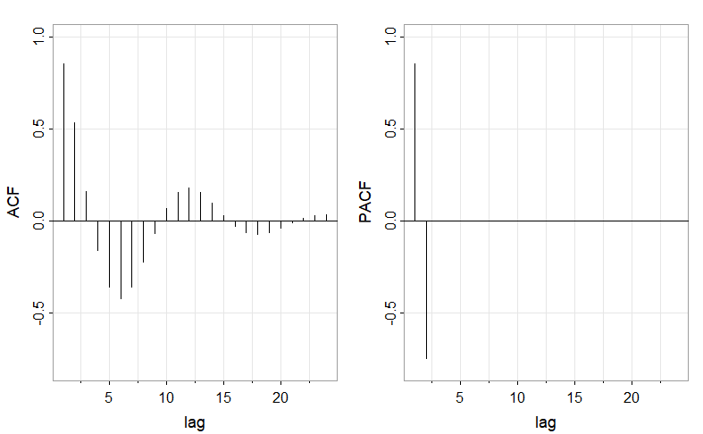

4.2 相关性函数¶
| 原文 | Time Series for Data Science - R Code used in Time Series: A Data Analysis Approach Using R |
|---|---|
| 作者 | Guangyu Wei |
| 发布 | 2025-06-15 |
| 状态 | Done |
1.自相关函数(ACF)¶
\(\text{MA}(q)\)模型¶
为方便起见，将模型写为\(x_t=\sum_{j=0}^q\theta_j w_{t-j}\)，其中\(\theta_0=1\)。因为\(x_t\)是一个白噪声的有限线性组合，所以该过程是平稳地，具有以下自相关函数：
从公式中可以看出。在滞后\(q\)期后的\(\gamma(h)\)处截尾(cut off)是\(\text{MA}(q)\)模型的特征。将式\(\text{4.2.1}\)除以\(\gamma(0)\)得到\(\text{MA}(q)\)的\(\text{ACF}\):
另外我们注意到，因为\(\theta_q\neq0\)，所以\(\rho(q)\neq 0\)。
\(\text{AR}(p)\)和\(\text{ARMA}(p,q)\)模型¶
对于一个\(\text{AR}(p)\)模型或\(\text{ARMA}(p,q)\)模型，将其写为因果\(\text{MA}(\infty)\)的形式：
从而，\(x_t\)的自协方差可以写成
guangyu 注: 动手推推不难得到
\(cov(\sum_{j=0}^\infty\psi_jw_{t-j},\sum_{j=0}^\infty\psi_jw_{t+h-j})=\) \(cov(\psi_0w_t+\psi_1w_{t-1}+...,\psi_0w_{t+h}+\psi_1w_{t+h-1}+...+\psi_hw_t+\psi_{h+1}w_{t-1}+... )\) \(=\sigma_{w}^{2}\sum_{j=0}^{\infty}\psi_{j+h}\psi_{j}\)
ACF由下式给出：
与\(\text{MA}(q)\)模型不同，\(\text{AR}(p)\)模型和\(\text{ARMA}(p,q)\)模型的\(\text{ACF}\)不在任何滞后期截尾，因此很难使用\(\text{ACF}\)识别\(\text{AR}\)模型或\(\text{ARMA}\)模型的阶数。
2. 偏自相关函数(PACF)¶
在式\(\text{(4.2.2)}\)中，我们看到\(\text{MA}(q)\)的\(\text{ACF}\)值在滞后期大于\(q\)时会变成\(0\)。此外，因为\(\theta_q\neq 0\)，所以\(\text{ACF}\)在滞后期数为\(q\)时并不为\(0\)。因此，当过程是移动平均过程时，\(\text{ACF}\)会提供大量关于依赖性的阶数的信息。
然而，如果过程为\(\text{ARMA}\)或\(\text{AR}\)模型，则单靠\(\text{ACF}\)仅能提供很少关于依赖性的阶数的信息。因此，为了确定\(\text{AR}\)模型的阶数，我们需要找一个像\(\text{MA}(q)\)模型的\(\text{ACF}\)那样可以提供模型阶数信息的函数，这个函数可以为\(\text{AR}\)模型提供阶数信息，称为偏自相关函数。
把上述想法应用到时间序列中，考虑一个因果的\(\text{AR}(1)\)模型\(x_t=\phi x_{t-1}+w_t\)。然后有
注意到因果关系中\(cov(w_t,x_{t-2})=0\)，因为\(x_{t-2}\)中含有\({w_{t-2},w_{t-3},...}\)，这些与\(w_t\)不相关。与\(\text{MA}(1)\)一样，\(x_t\)和\(x_{t-2}\)之间的相关性不为\(0\)。因为\(x_t\)通过\(x_{t-1}\)与\(x_{t-2}\)依赖。假设我们通过移除\(x_{t-1}\)来打破这个依赖链。也就是说，我们考虑\(x_t-\phi x_{t-1}\)与\(x_{t-2}-\phi x_{t-1}\)之间的相关性，因为这就是\(x_t\)和\(x_{t-2}\)移除了对\(x_{t-1}\)的依赖性后的相关性，用这样的方式，我们可以打破\(x_t\)和\(x_{t-2}\)之间的依赖链:
我们使用的工具就是偏自相关函数，就是任意\(x_s\)与\(x_t\)去除了两者"中间"的所有线性影响后的相关性。
guangyu 注：
这个地方还不是很清楚，后面解释。
对于\(h=1,2,...\)，一个平稳过程\(x_t\)的 偏自相关函数(PACF) 表示为
和
其中 \(\hat{x}_h\) 是 \(x_h\) 对 \(\{x_1, x_2, \cdots, x_{h-1}\}\) 回归得到的结果，\(\hat{x}_0\) 是 \(x_0\) 对 \(\{x_1, x_2, \cdots, x_{h-1}\}\) 回归得到的结果。
因此，由于平稳性，\(\text{PACF}(\phi_{hh})\)是\(x_{t+h}\)和\(x_t\)除去了\(\{x_{t+1},...,x_{t+h-1}\}\)的线性影响后的相关性关系。
\(\text{AR}(p)\)模型¶
对于所有滞后期大于\(p\)的\(\text{AR}(p)\)模型，其\(\text{PACF}\)将为\(0\)，滞后期为\(p\)期的\(\text{PACF}\)不可为\(0\)。因为可以证明\(\phi_{pp}=\phi_{p}\)(模型最后的一个参数)。
对于\(\text{AR}(2)\)模型：
在这里，\(\phi_{11}=\rho(1)=\phi_1/(1-\phi_2)=1.5/1.75\approx0.86,\phi_{22}=\phi_2=-0.75,\)，对于\(h>2\),\(\phi_{hh}=0\)。

图 4.1：展示了该\(\text{AR}(2)\)模型的\(\text{ACF}\)和\(\text{PACF}\)。
\(\text{MA}(q)\)模型¶
对于可逆的\(\text{MA}(q)\)，具有一个\(\text{AR}(\infty)\):
此外，模型不存在项数有限的表达式。因此，从这个结果可以明显地看出，该序列的\(\text{PACF}\)不会像\(\text{AR}(p)\)模型一样截尾。对于一个\(\text{MA}(1)\)模型，\(x_t=w_t+\theta w_{t-1}\)，其中\(|\theta|<1\)，可以证明: